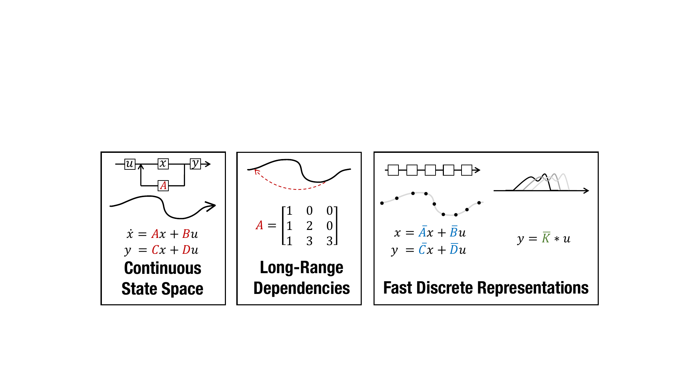
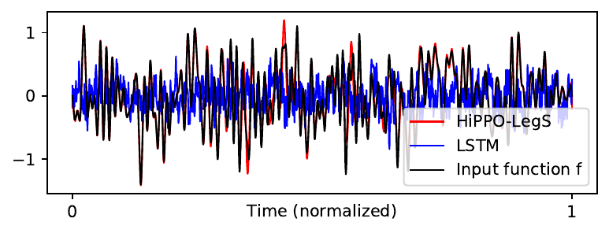
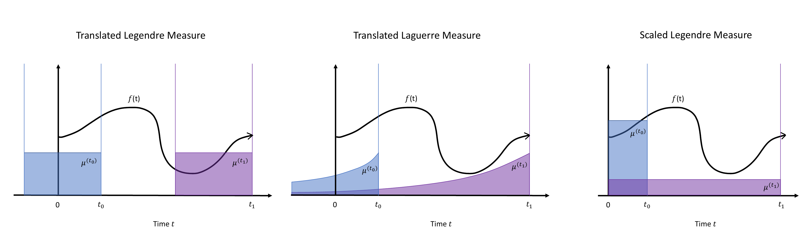
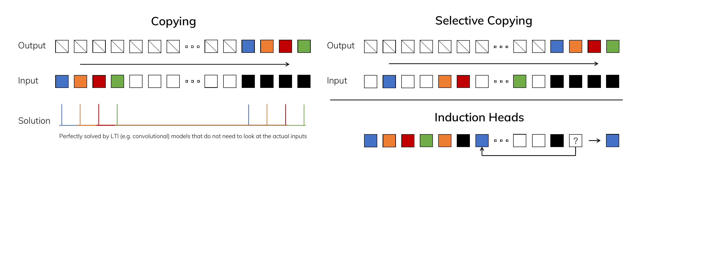
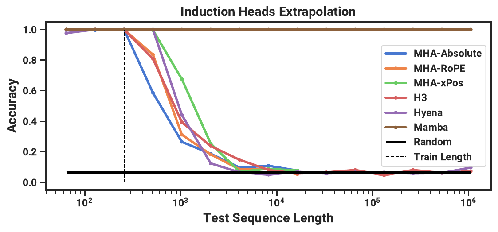
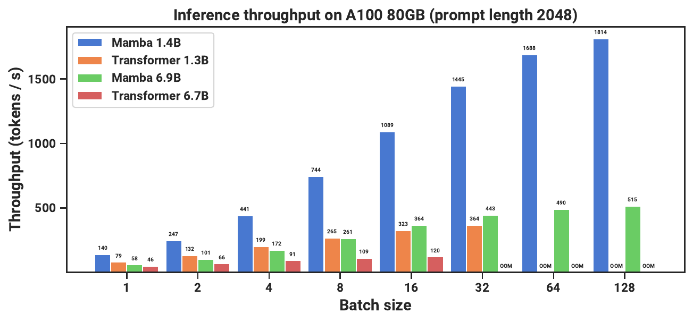

An interactive explainer
State Space Models: from a swinging pendulum to Mamba
There is one little equation that describes a swinging pendulum, an electrical circuit, the autopilot in a plane — and, it turns out, a modern sequence model that rivals the Transformer. It is $\dot{x} = Ax + Bu$. This is the story of how a 60-year-old idea from control theory became Mamba, a language model that runs in linear time and keeps improving on contexts up to a million tokens long. The whole journey is really one idea — the state — read three different ways.

Any model that processes a sequence — words, audio samples, sensor readings — faces the same fundamental problem: it cannot keep the entire past around. By the time you reach token number ten thousand, you cannot afford to re-read tokens one through nine thousand nine hundred and ninety-nine. You have to compress the past into a small summary, and update that summary as each new token arrives. That summary is called the state.
This is not a deep-learning idea. It is the founding idea of dynamical systems and control theory, worked out decades before anyone trained a neural network. A physicist describing a pendulum, an engineer stabilizing a rocket, and a language model predicting the next word are all doing the same thing: maintaining a compact state that captures everything about the past that matters for the future.
We will start where the math started — with continuous physical systems — and derive the core results (the solution, the eigenvalues, the discretization) with interactive widgets to build intuition. Then we will do something audacious: stop treating $A$, $B$, $C$ as physics and start learning them. That single move takes us, in a few careful steps, all the way to Mamba.
1. What is a state?
Picture a mass hanging from a spring, bobbing up and down. To predict where it will be a moment from now, what do you need to know? Not its entire history of motion — just two numbers right now: its position and its velocity. Given those, Newton's laws determine the entire future. Position and velocity are a sufficient summary of the past. That is the state.
This is the Markov property in its original, physical form: the future depends on the past only through the present state. Stack the position and velocity into a vector $x(t)\in\mathbb{R}^2$, and the laws of motion become a single linear differential equation:
$$ \dot{x}(t) \;=\; A\,x(t) \;+\; B\,u(t), \qquad y(t) \;=\; C\,x(t) \;+\; D\,u(t). $$
Read it slowly, because every piece comes back later. $x(t)$ is the hidden state. $A$ is the state matrix: it says how the state evolves on its own — the internal physics, the spring pulling back, the damping bleeding off energy. $u(t)$ is the input you push in (a force on the mass, a token in a sequence), and $B$ says how that input enters the state. $C$ reads a visible output $y(t)$ back out of the hidden state, and $D$ is a direct input-to-output shortcut (a skip connection — so unimportant that S4 and Mamba just set $D=0$ and fold it in elsewhere).
Everything interesting lives in $A$. Its eigenvalues decide whether the system decays to rest, blows up, or oscillates forever. Drag them around in the complex plane below and watch the pendulum's fate change. This single 2×2 matrix is the seed of the entire field.
2. Solving the system — and the convolution hiding inside
A differential equation tells you the rate of change of the state; to actually predict the future we need to solve it. For the scalar equation $\dot{x}=ax$ you already know the answer: $x(t)=e^{at}x(0)$. The beautiful fact is that the matrix version is identical, with the matrix exponential $e^{At}$ standing in for $e^{at}$. With an input driving the system, the full solution is:
$$ x(t) \;=\; e^{At}\,x(0) \;+\; \int_0^t e^{A(t-\tau)}\,B\,u(\tau)\,d\tau. $$
The first term is the system coasting on its initial state; the second is the accumulated effect of every input pushed in between time $0$ and now. Read the output through $C$:
$$ y(t) \;=\; \underbrace{C e^{At} x(0)}_{\text{initial condition}} \;+\; \int_0^t \underbrace{C e^{A(t-\tau)} B}_{\text{impulse response } h(t-\tau)} \, u(\tau)\, d\tau. $$
Stop and stare at that integral, because it is the secret of the whole field. The output is the input $u$ convolved with a fixed function $h(t)=Ce^{At}B$ — the system's impulse response. A linear state space model is a convolution; we just have not computed the kernel yet. Hold that thought — it becomes the trick that lets these models train as fast as a CNN.
Eigenvalues are the system's personality
Why does $e^{At}$ control everything? Diagonalize $A = V\Lambda V^{-1}$, where $\Lambda$ holds the eigenvalues $\lambda_i$. Then $e^{At} = V e^{\Lambda t} V^{-1}$, and along each eigen-direction the state simply evolves as $e^{\lambda_i t}$. Write $\lambda = \sigma + i\omega$ and the behavior reads straight off: the real part $\sigma$ sets exponential decay ($\sigma<0$, stable) or growth ($\sigma>0$, unstable); the imaginary part $\omega$ sets the oscillation frequency. A pendulum that loses energy has eigenvalues just left of the imaginary axis spiraling inward — exactly what you saw in the widget above. Stability, memory, resonance: all of it is the geometry of where the eigenvalues sit.
3. From continuous to discrete
Physics happens in continuous time, but data arrives in discrete steps: audio samples every $1/16000$ of a second, one word at a time. To run our system on a computer we must discretize it — turn the differential equation into a step-by-step recurrence with a step size $\Delta$ (the time between samples). The standard tool is the bilinear transform, which approximates the matrix exponential with a well-behaved rational map. S4 uses exactly this:
$$ \Abar = \Big(I - \half A\Big)^{-1}\Big(I + \half A\Big), \qquad \Bbar = \Big(I - \half A\Big)^{-1} \Delta\, B. $$
(Mamba instead uses the zero-order hold, $\Abar=\exp(\Delta A)$ — same idea, a cleaner exponential.) The continuous system collapses into a discrete linear recurrence:
$$ x_k \;=\; \Abar\, x_{k-1} \;+\; \Bbar\, u_k, \qquad y_k \;=\; C\,x_k. $$
That is it — that is the workhorse equation of every model in this post. At each step, decay the old state by $\Abar$, add the new input through $\Bbar$, and read out through $C$. The step size $\Delta$ is not a throwaway detail: too large and the discrete system lurches past the true trajectory and can go unstable; too small and you waste resolution. Slide $\Delta$ below and watch the discrete samples track — or peel away from — the smooth continuous curve.
4. Learn the system — and the two faces of one model
Here is the leap. Forget springs and circuits. Take that discrete recurrence, make $\Abar$, $\Bbar$, $C$ into learnable parameters, and you have a neural network layer that maps an input sequence $u_1,\dots,u_L$ to an output sequence $y_1,\dots,y_L$. It is, structurally, a linear recurrent neural network. So far this sounds unremarkable — RNNs are old news, and famously slow and hard to train. Two things rescue it.
The first is a superpower the nonlinear RNN never had. Because the recurrence is linear and time-invariant (the same $\Abar$ every step), we can unroll it in closed form. Expand $x_k=\Abar x_{k-1}+\Bbar u_k$ all the way down and the output becomes a plain weighted sum of past inputs:
$$ y_k = C\Bbar\,u_k + C\Abar\Bbar\,u_{k-1} + C\Abar^2\Bbar\,u_{k-2} + \cdots = \sum_{j\ge 0} \big(C\Abar^{j}\Bbar\big)\, u_{k-j}. $$
The coefficients depend only on the parameters, not on the data — so they form a single fixed kernel, the SSM convolution kernel, and the whole layer is a convolution:
$$ \Kbar = \big(\,C\Bbar,\; C\Abar\Bbar,\; C\Abar^2\Bbar,\; \dots,\; C\Abar^{L-1}\Bbar\,\big), \qquad y = \Kbar * u. $$
This is the same impulse response we spotted in the continuous integral back in §2, now discretized. And it hands us a remarkable gift: two computational faces of one model. During training, run it as a convolution — compute the entire output sequence in parallel with an FFT, just like a CNN, no slow step-by-step loop. During inference, run it as a recurrence — generate one token at a time using only the small fixed-size state, with no growing cache. The animation below is the heart of it: the recurrence unrolling into the kernel, and the kernel sliding across the input.
The duality that powers S4. The step-by-step recurrence (top) carries a state forward by repeated multiplication by $\Abar$. Unroll it and the powers $C\Abar^{j}\Bbar$ snap into a single fixed kernel $\Kbar$ — which then slides over the whole input at once as a convolution. Sequential to train? No. Parallel.
Build both faces yourself below: set the system, watch the impulse-response kernel form, and confirm that running it as a recurrence and as a convolution give the same output.
So we have a layer that trains like a CNN and runs like an RNN. Why didn't this take over years earlier? Because of the second problem, the one the convolution trick does not solve: a randomly-initialized linear recurrence is a terrible memory. Repeatedly multiplying by $\Abar$ either shrinks old information to nothing (vanishing) or amplifies it to garbage (exploding). In practice, swapping a random $A$ for a carefully chosen one took a sequential-MNIST model from 60% to 98% accuracy. The matrix $A$ is not a free parameter you can shrug at. It has to be built for memory. Which is exactly what HiPPO does.
5. HiPPO: memory as optimal approximation
HiPPO (High-order Polynomial Projection Operators) asks a startlingly clean question: of all the possible $A$ matrices, which one makes the state the best possible compressed memory of everything that has happened? To answer it, reframe memory as online function approximation. Think of the input history as a function $f(x)$ for $x \le t$. We want to keep, in our $N$-dimensional state $c(t)$, the coefficients of the best degree-$N$ polynomial approximation of that whole history — and we want to keep it updated online, as new data streams in.
Choose a measure that says how much each past moment matters, project the history onto an orthogonal polynomial basis (Legendre polynomials) under that measure, and ask how the optimal coefficients evolve in time. The astonishing result is that they obey a linear ODE in exactly our state space form — and it pins down a specific $A$ and $B$:
$$ \frac{d}{dt}c(t) = -\frac{1}{t}\,A\,c(t) + \frac{1}{t}\,B\,f(t), \qquad B_n = \sqrt{2n+1}, $$
$$ A_{nk} = \begin{cases} \sqrt{(2n+1)(2k+1)} & n > k \\ n+1 & n = k \\ 0 & n < k. \end{cases} $$
This is HiPPO-LegS, the "scaled Legendre" operator. The mysterious state matrix is no longer mysterious: it is the unique operator that keeps your hidden state an optimal running summary of the entire past. And because the window scales with time, it has no timescale hyperparameter at all — it is provably invariant to how fast your data is sampled, and its gradients decay only polynomially ($\Theta(1/\ell)$), dodging the vanishing-gradient curse that kills ordinary RNNs.


You can feel this directly. In the widget below, a signal streams in and HiPPO maintains an $N$-dimensional state; from that state alone it reconstructs the entire history as a sum of Legendre polynomials. Turn $N$ up for sharper memory, down to see the compression blur the oldest details first.
6. S4: making it actually work at scale
HiPPO tells us which $A$ to use. S4 — Structured State Spaces — makes computing with it fast enough to matter. The naive obstacle: forming the convolution kernel $\Kbar$ means taking powers $\Abar, \Abar^2, \dots, \Abar^{L-1}$, an $O(N^2 L)$ slog that is hopeless for long sequences.
S4's insight is to never form those powers directly. It writes the HiPPO matrix in a diagonal-plus-low-rank (DPLR) structure, $A = \Lambda - PQ^{*}$, and then computes the kernel through its generating function evaluated at the roots of unity, which reduces to a Cauchy kernel — an object with stable, near-linear algorithms. The intractable $O(N^2 L)$ collapses to a near-linear $\tilde{O}(N+L)$. The details are a beautiful piece of numerical linear algebra, but the moral is simple: structure in $A$ buys speed. Against the previous SSM implementation, S4 was up to 30× faster and 400× more memory-efficient.
And it worked spectacularly. On the Long Range Arena benchmark — six tasks designed specifically to torture models with long-range dependencies — S4 didn't just win, it solved the previously impossible Path-X task (reasoning over sequences of length 16,384), where every prior model had been stuck at random-guessing.
| Long Range Arena | Sequence len | S4 | Best prior / Transformer |
|---|---|---|---|
| Average (6 tasks) | up to 16k | 86.1% | 59.4% (prior best) · 53.7% (Transformer) |
| Path-X | 16,384 | 96.4% | 50% (all prior: random guess) |
| Pathfinder | 1,024 | 94.2% | 77.1% (prior best) |
| Raw audio (SC10) | 16,000 | 98.3% | 90.8% (Transformer, 100× shorter features) |
Selected results from Gu, Goel & Ré, S4 (2021). S4 was the first model in any class to score above chance on Path-X. Follow-ups S4D (diagonal-only) and S5 (a multi-input variant computed with a parallel scan instead of a convolution) simplified the machinery while keeping the performance.
7. Mamba: giving the memory a choice
S4 has a hidden weakness, and naming it points straight at the fix. Because $\Abar$, $\Bbar$, $C$, and $\Delta$ are fixed, an S4 layer is linear time-invariant: it applies the same convolution kernel to every input, treating the 5th token exactly like the 5,000th. That is wonderful for audio, where the dynamics really are uniform — but it means the model cannot make content-dependent decisions. It cannot look at a token and decide "this one matters, remember it" or "this is filler, ignore it." Two toy tasks expose this cleanly: selective copying (copy only the marked tokens, scattered at random positions) and induction heads (see "Harry … Potter" once, then recall "Potter" after the next "Harry"). Both need the model to select. A fixed kernel cannot.

Mamba's move is almost embarrassingly direct: make the parameters functions of the input. $B$, $C$, and the step size $\Delta$ stop being fixed weights and become projections of the current token $x_t$ ($A$ stays fixed, only reshaped by the now-varying $\Delta$):
$$ B_t = \mathrm{Linear}_N(x_t), \quad C_t = \mathrm{Linear}_N(x_t), \quad \Delta_t = \mathrm{softplus}\big(\text{param} + \mathrm{Linear}(x_t)\big). $$
Now the recurrence $h_t = \Abar_t h_{t-1} + \Bbar_t x_t$ is time-varying: each token sets its own dynamics. The step size $\Delta_t$ becomes a content-aware gate — a large $\Delta_t$ resets the state and focuses on the current input ("this is important"), a small $\Delta_t$ lets the input slide by untouched ("ignore this"). In fact, collapse the SSM to a single dimension and this exactly reproduces the classic RNN gate, $h_t = (1-g_t)h_{t-1} + g_t x_t$ with $g_t = \sigma(\mathrm{Linear}(x_t))$ — the same gating idea, now derived rather than guessed.
But there is a price, and it is the whole reason this wasn't done sooner. The instant the parameters vary with the input, the model is no longer time-invariant — so the convolution view dies. There is no single fixed kernel anymore; you are back to a sequential recurrence, seemingly giving up the parallel training that made S4 fast. Mamba pays the price with a hardware-aware selective scan: a parallel-scan algorithm (a recurrence can still be parallelized associatively, even when time-varying), fused into a single GPU kernel that keeps the expanded state in fast SRAM and never writes it to slow HBM, with recomputation in the backward pass. The result is linear time in sequence length with a small constant — 20–40× faster than a naive implementation, and faster than FlashAttention beyond ~2k tokens.


Wrap this selective SSM into a simple block (folding in the gated-MLP structure so you can homogeneously stack it, no attention anywhere) and you get Mamba. Try the selection mechanism for yourself below: stream a sequence past a layer and toggle between a fixed (time-invariant) kernel and a selective gate, and watch which one can actually copy the marked tokens.
8. Results: a Transformer rival in linear time
Selection did not just fix toy tasks — it made SSMs competitive with Transformers on real language, while keeping their linear-time, constant-memory inference. Mamba was the first attention-free model to match the strong "Transformer++" recipe (RoPE + SwiGLU + RMSNorm) on the Pile, and it punches well above its weight class on downstream tasks.
| Setting | Metric | Mamba | Comparison |
|---|---|---|---|
| Language (zero-shot avg) | Mamba-2.8B (↑) | 63.3% | 59.1% (Pythia-2.8B) |
| vs. 2.5× larger (↑) | 63.3% | 61.7% (Pythia-6.9B) | |
| Selective copying | accuracy (↑) | 99.8% | 18.3% (S4, time-invariant) |
| Induction heads | extrapolation (↑) | 256 → 1M tokens | attention: OOM past 16k |
| Inference | throughput (↑) | 5× Transformer | + no KV cache (constant memory) |
| Speech gen (SC09) | FID (↓) | 0.94 | 1.99 (SaShiMi, prior SOTA) |
Selected results from Gu & Dao, Mamba (2023). Mamba also sets the pace on DNA and audio, and — unlike time-invariant models — keeps improving as the context grows to a million tokens.

9. Why it works
Step back and the arc is a single idea, reinterpreted three times. The progress was not a pile of unrelated tricks — each step removed one specific weakness of the previous one.
HiPPO fixed the memory
A linear recurrence is only as good as its $A$ matrix, and a random one forgets. HiPPO derived the $A$ that makes the state a provably optimal compression of the entire past, with polynomially-decaying gradients and no timescale to tune. That is what turned "a linear RNN" from a toy into a long-range memory.
The duality made it fast
Linearity and time-invariance let the very same model be a parallel convolution for training and a constant-memory recurrence for inference. You stop paying the Transformer's quadratic attention cost and its ever-growing KV cache, and you stop paying the RNN's sequential training cost. S4's structured-matrix algebra is what made the convolution view cheap enough to use.
Selection added the intelligence
Time-invariance is exactly what makes content-based reasoning impossible. Letting $\Delta$, $B$, $C$ depend on the input restores it — the model can now choose what to store and what to skip — and the hardware-aware scan keeps it linear-time even though the convolution shortcut is gone. The state stopped being a passive summary and became an active, selective memory.
10. What it means
The same five letters, $\dot x = Ax + Bu$, carried us from a swinging mass to a frontier language model. What changed each time was how we read the state: first as a physical condition (position and velocity), then as an optimal compressed memory of a sequence's past (HiPPO/S4), and finally as a memory that chooses what to keep (Mamba). That reinterpretation — not a new equation, but a new meaning for an old one — is the whole story.
It also reframes the Transformer. Attention keeps every token and pays $O(L^2)$ to compare them all; an SSM keeps a fixed-size state and pays $O(L)$. The bet behind Mamba is that a state which is smart about what it remembers can rival a model that remembers everything — and on long contexts, where quadratic attention buckles, win outright.
Open problems
- Copying and exact recall. A fixed-size state is a compression; tasks needing verbatim recall of arbitrary spans still favor attention. Hybrid Mamba-attention models are the pragmatic answer.
- The duality, recovered. Mamba-2 and the "state space duality" reconnect selective SSMs to a form of linear attention — suggesting SSMs and Transformers are two ends of one design space, not rivals.
- Where the state shines. Genomics, audio, video, time series — wherever sequences run to hundreds of thousands of steps, the linear-time state model is structurally advantaged.
The bottom line
State space models are what happens when you take the oldest idea in dynamical systems — compress the past into a state — and refuse to let go of it through six decades and a deep-learning revolution. Learn the system, give it a principled memory, exploit the recurrence-convolution duality, and finally let the memory choose. The pendulum and the language model were never different problems. They were always the same equation, waiting to be read the right way.